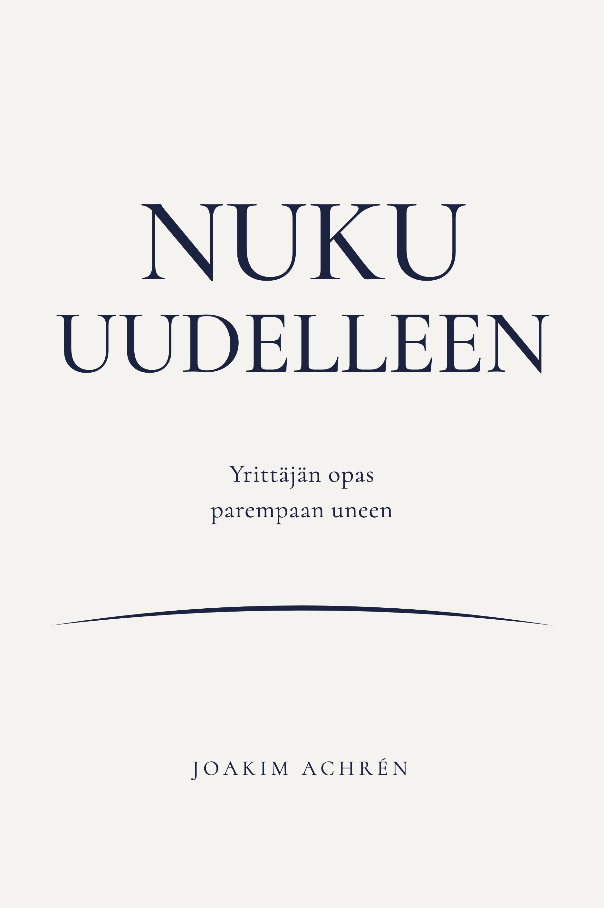

Nuku uudelleen
Yrittäjän opas parempaan uneen
Käytännönläheinen opas yrittäjille, jotka ovat menettäneet unensa työn paineessa — ja haluavat sen takaisin ilman, että joutuvat luopumaan tavoitteistaan.
E-kirja + äänikirja. Toimitetaan heti maksun jälkeen.

Miksi tämä kirja?
Olet lukenut unenhuoltovinkit. Tiedät sinivalosta ja kofeiinista. Mutta yrittäjänä uniongelmasi ovat syvempiä: ajatus pyörii kello kolmelta, päätökset painavat, ja jokainen mahdollisuus tuntuu siltä, josta ei saa jäädä paitsi.
Tieteeseen perustuva
Ymmärrä hormonaalinen sinfonia, joka ohjaa untasi — ja miksi yrittäjän stressi rikkoo sen eri tavalla.
Yrittäjälle suunnattu
Keinot on rakennettu niille, jotka rakentavat jotain tyhjästä ja silti haluavat nukkua.
Käytännön työkalut
Unen seurannasta iltarutiineihin — kokonaisuus, jonka voit sovittaa omaan elämääsi.
Mitä kirjassa on?
Tässä muutama nosto niistä aiheista, joita kirjassa käsitellään.
Yrittäjähaastattelut
Pelialan ja teknologia-alan yrittäjiä kertoo omista unihaasteistaan — rahoituskierroksista työuupumukseen.
Mielen portsari
Visualisointitekniikka, jolla saat ajatukset kiinni, kun heräät kello kolme yöllä.
Kronotyypit
Leijona, karhu, susi vai delfiini? Opettele tunnistamaan oma vuorokausirytmisi ja aikatauluta sen mukaan.
Ylikunto ja uni
Miksi salitreenisi saattaa aiheuttaa aamuyön heräilyjä — ja miten voit rakentaa treenisi uudelleen.
Kofeiini ja alkoholi
Ajoituksen ja annostelun tiede yrittäjälle, joka juo kahvia ja viiniä eikä aio luopua kummastakaan.
Alle 20 euron unisetti
Edulliset perusratkaisut, jotka voittavat kalliit vempaimet: pimennysverhot, unimaski, korvatulpat.
Saatavilla 24.4.2026
Paketti sisältää e-kirjan ja äänikirjan. Maksu Lemon Squeezyn kautta, toimitus sähköpostiin heti.
Tai erikseen: E-kirja 12,99 € · Äänikirja 16,99 € · Kovakantinen 29,99 €
Suoratoistopalveluissa:
Kirjailijasta
Usein kysytyt kysymykset
Kenelle kirja on tarkoitettu?
Yrittäjille ja vaativaa työtä tekeville, jotka huomaavat unensa kärsivän työn paineessa. Kirja ei oleta lääketieteellistä taustaa, mutta se ei myöskään selitä asioita liikaa auki.
Mikä ero on e-kirjan, äänikirjan ja kovakantisen välillä?
Sisältö on sama kaikissa. E-kirja ja äänikirja toimitetaan sähköpostiin heti maksun jälkeen. Kovakantinen tulostetaan tilauksesta ja postitetaan.
Tarvitseeko minulla olla uniongelmia, jotta kirjasta olisi hyötyä?
Ei. Kirja auttaa myös tunnistamaan uneen vaikuttavia tekijöitä ennen kuin ongelma pääsee kehittymään. Moni lukija on sanonut oppineensa jotain uutta, vaikka nukkuu keskimäärin hyvin.
Onko tämä sama kirja kuin englanninkielinen Sleep Again?
Kyllä, tämä on suomennettu laitos. Muutamia paikallisia yksityiskohtia on mukautettu, mutta tutkimustieto ja keinot ovat samat.
Miten kirja eroaa tavallisista unioppaista?
Se on kirjoitettu yrittäjän näkökulmasta. Monessa unioppaassa lähdetään siitä, että lukijalla on säännöllinen arki ja matala stressitaso. Tässä kirjassa oletuksena on, että niin ei ole — ja että täydellistä unta ei tarvitse tavoitella.
Onko äänikirja tekoälyllä tuotettu?
Kyllä. Äänikirja on tuotettu ElevenLabsin tekoälykertojaäänellä, jonka Joakim on itse valinnut. Sama malli, jota moni kansainvälinen kustantaja käyttää suomenkielisissä äänikirjoissa.